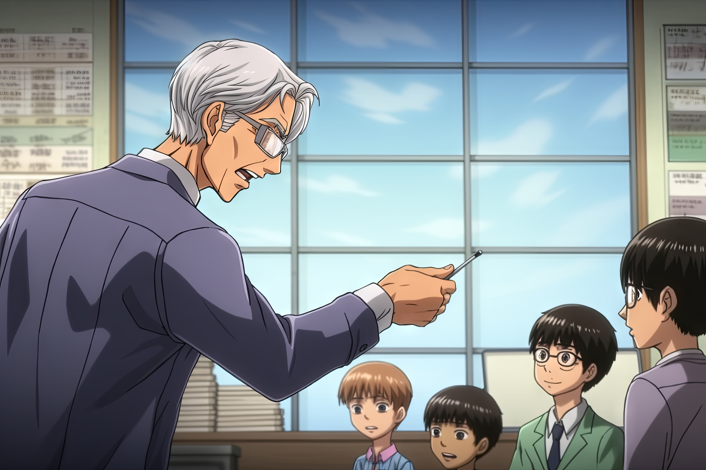
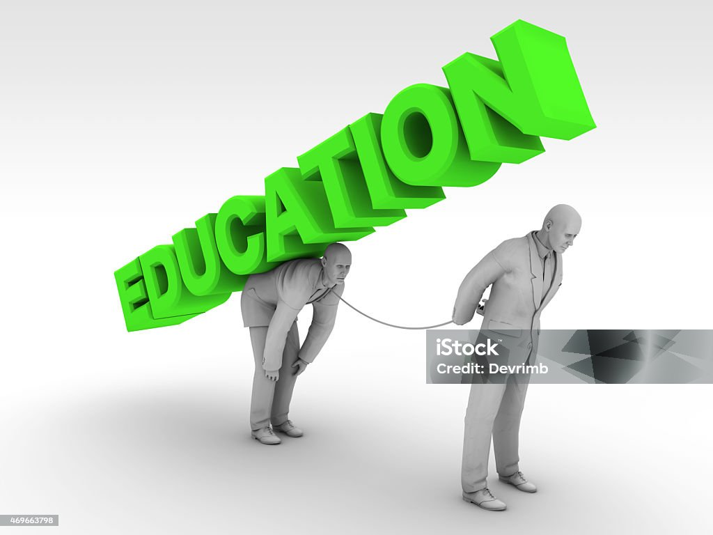

Description:
Teacher-student relationships are very important for learning. If students feel teachers do not care, listen, or are too strict, they may feel ignored or afraid to participate in class. Poor relationships can make students avoid asking questions, sharing ideas, or joining activities.
Results:
In one study, 33.8% of students reported mental health problems, and students with
weak teacher relationships had more difficulties. Poor relationships can make students less motivated, increase stress, and reduce academic achievement. Students may feel lonely, disconnected, or frustrated, which affects their overall learning.
Solutions:

Teachers should treat students with respect, listen carefully,